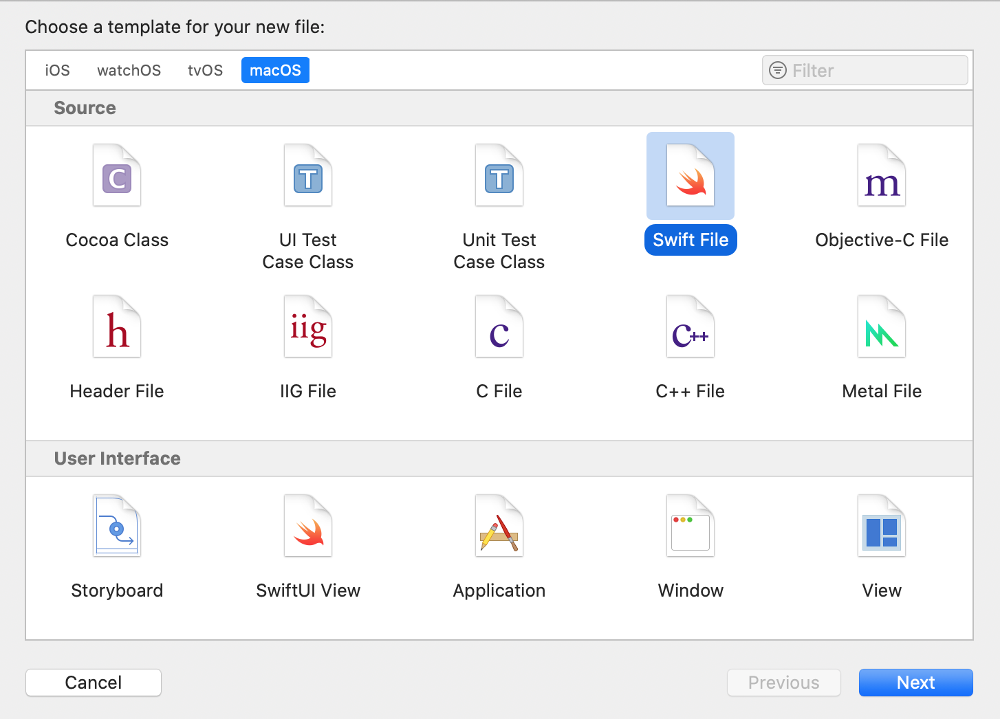
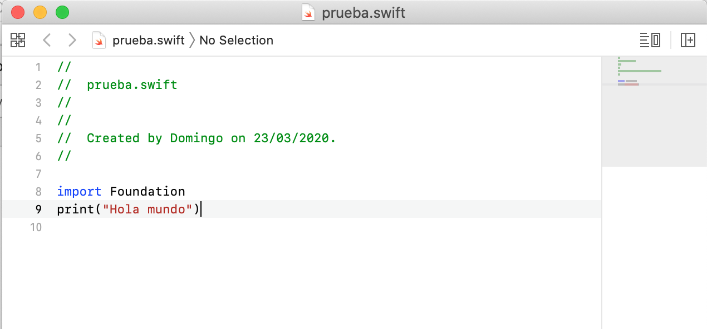
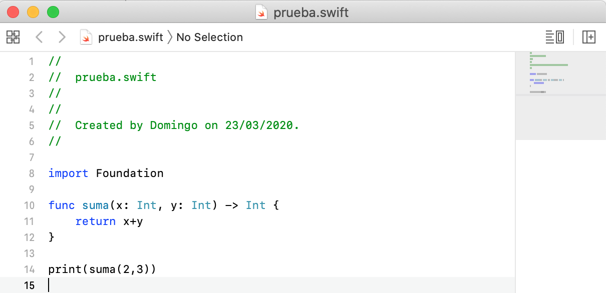
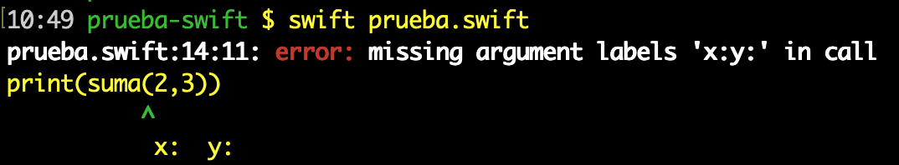
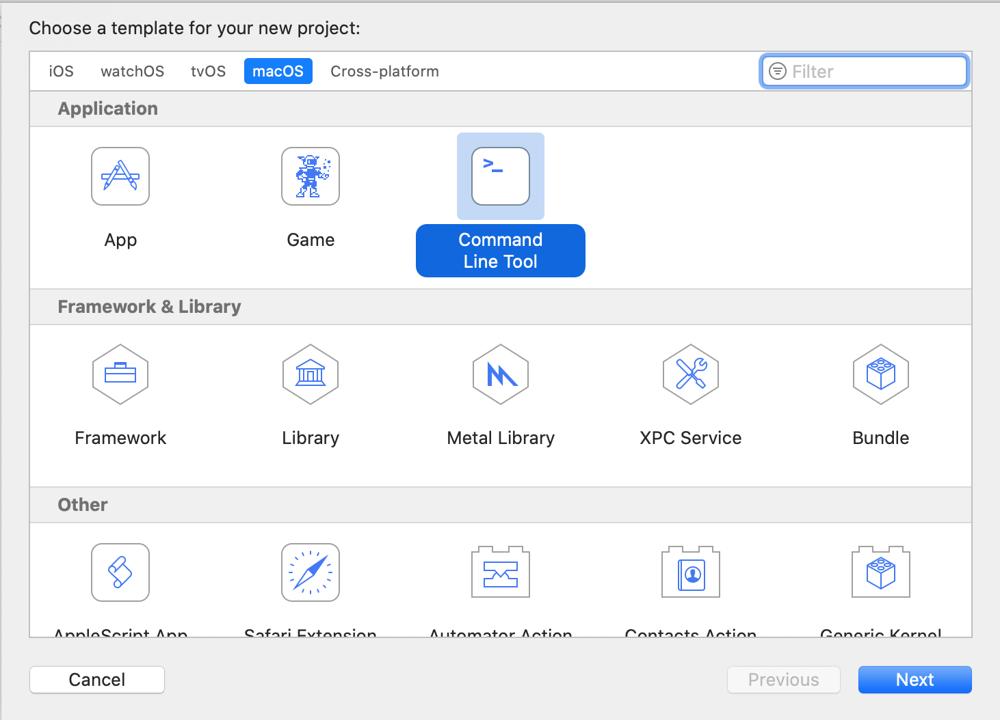
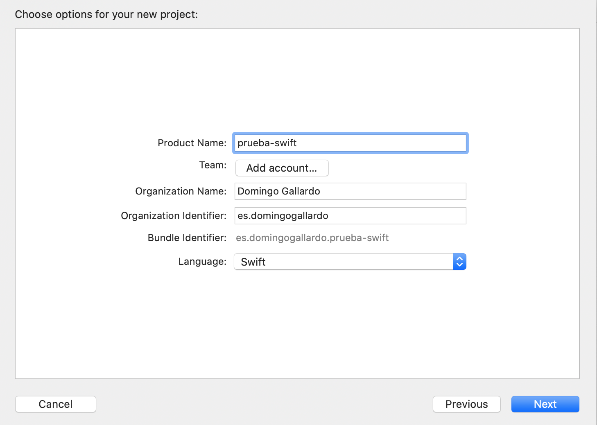
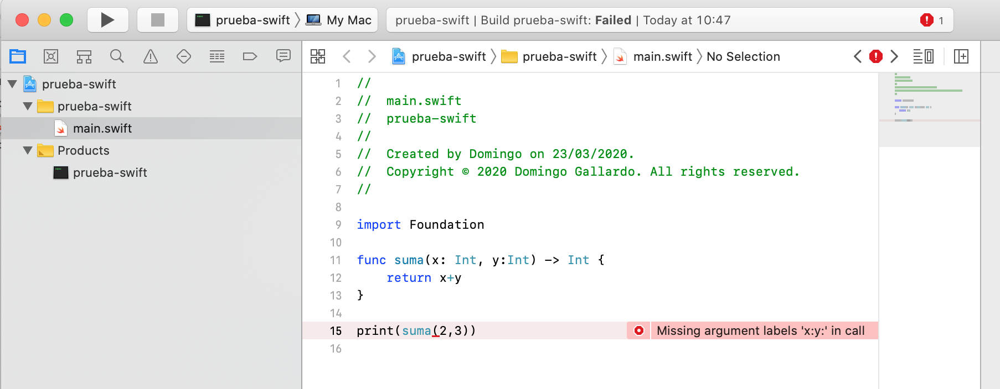

Seminario 2: Seminario de Swift¶
El lenguaje de programación Swift¶
Swift es un lenguaje de programación compilado, de propósito general y multi-paradigma desarrollado por Apple. Swift se presentó en la Conferencia de Desarrolladores de Apple (WWDC) de 2014. Durante el año 2014 se desarrolló la versión 1.2 y en la WWDC 2015 se presentó Swift 2, una actualización importante del lenguaje. Inicialmente fue un lenguaje propietario, pero el 3 de diciembre de 2015 se hizo open source bajo la licencia Apache 2.0, para las plataformas Apple y Linux. Los cambios en el lenguaje son propuestos y discutidos por la comunidad en un proceso denominado Swift evolution.
La siguiente descripción se ha extraído del repositorio GitHub de Swift:
Swift es un lenguaje de programación de sistemas de alta eficiencia. Tiene una sintaxis limpia y moderna, ofrece acceso transparente a código y librerías existentes en C y Objective-C, y es seguro en el uso de memoria (memory safe).
Aunque está inspirado en Objective-C y en muchos otros lenguajes, Swift no es en si mismo un lenguaje derivado de C. Como lenguaje completo e independiente, Swift proporciona características fundamentales como control de flujo, estructuras de datos y funciones, junto con construcciones de alto nivel como objetos, protocolos, clausuras y genéricos. Swift se apoya en módulos, eliminando la necesidad de cabeceras y la duplicación de código que éstas inducen.
En los primeros años de vida del lenguaje se introdujeron cambios muy fuertes, incrementándose en años consecutivos el número de versión mayor y rompiendo la compatibilidad del código fuente con las versiones anteriores. Sin embargo, en los últimos años el lenguaje ha madurado y llevamos varios años con incrementos sólo de versiones menores de la versión mayor 5. En la actualidad se ha lanzado la versión 5.8, pero puedes seguir perfectamente la asignatura y las prácticas con cualquier versión 5.x.
Ejecución de programas Swift¶
Es posible descargar el compilador de Swift en los sistemas operativos Mac (utilizando el entorno de desarrollo Xcode) o Linux.
A continuación explicamos las distintas formas de ejecutar programas Swift.
Ejecución on-line¶
Existen varios sitios on-line en los que es posible ejecutar código Swift. Recomendamos:


Instalación en Linux Ubuntu¶
Existen distribuciones oficiales de Swift para Linux 22.04 y 24.04.
Brevemente, los pasos para su instalación son los siguientes:
-
Confirmar que los paquetes de la instalación de Linux están actualizados:
$ sudo apt-get update $ sudo apt-get upgrade -
Instalar las dependencias que encontrarás en la página web oficial de Apple usando
apt-get install. Necesitarás tener permisos de super usuario para hacerlo:sudo apt-get install.Cuidado
Dependiendo de tu versión de Linux deberás descargarte unas dependencias distintas. Mira bien en la página de Apple el comando
apt-get installconcreto que debes ejecutar según tu versión. Mira las dependencias para tu versión en la página Swift oficial. -
Descargar la versión y plataforma deseada (fichero
swift-<VERSION>-<PLATFORM>.tar.gz). Por ejemplo, los siguientes comandos se descargan la versión 6.0.3 de Swift de las distintas distribuciones de Ubuntu.-
Ubuntu 22.04:
$ wget https://download.swift.org/swift-6.0.3-release/ubuntu2204/swift-6.0.3-RELEASE/swift-6.0.3-RELEASE-ubuntu22.04.tar.gz- Ubuntu 24.04:$ wget https://download.swift.org/swift-6.0.3-release/ubuntu2404/swift-6.0.3-RELEASE/swift-6.0.3-RELEASE-ubuntu24.04.tar.gz
-
-
Extaer el archivo:
$ tar xzf swift-<VERSION>-<PLATFORM>.tar.gzEsto crea el directorio
usr/en la localización del archivo. Puedes probar si funciona el comandoswiftmoviéndote al directoriobiny ejecutando:$ ./swift repl Welcome to Swift version 5.8 Type :help for assistance. 1> print("Hola mundo") Hola mundo 2> :quit $ -
Para poder ejecutar
swiftdesde cualquier directorio debes actualizar el PATH o moverusr/bin/swiftal directorio/usr/bin.$ export PATH=/path/to/usr/bin:"${PATH}"
Instalación en Windows¶
Puedes instalar nuestra distribución WSL descargándola desde este enlace.
Se trata de una copia exportada en formato tar de una una distribución WSL Ubuntu 24.04 preparada con Swift 6.0.3 instalada para ejecutar directamente Swift. Antes de proceder, verifica que tienes WSL instalado y habilitado en tu sistema con el siguiente comando en la terminal de Windows (PowerShell o CMD):
wsl --list --verbose
Este comando te mostrará las distribuciones de Linux instaladas y su estado.
Si no tienes WSL instalado
Si no tienes WSL puedes habilitarlo mediante PowerShell ejecutando el siguiente comando como administrador:
wsl --install
Este comando instalará la versión más reciente de WSL. Si WSL ya está habilitado, el comando actualizará a WSL 2 si es necesario y disponible.
Alternativamente, puedes habilitar WSL a través del panel de control de Windows:
- Abre el Panel de Control.
- Ve a "Programas".
- Haz clic en "Activar o desactivar las características de Windows".
- Busca "Subsistema de Windows para Linux", márcalo y haz clic en OK.
Después de habilitar WSL, se te pedirá que reinicies tu ordenador.
Pasos para importar nuestra distribución:
- Crea una carpeta
UbuntuLPPen un disco con al menos 8GB de capacidad. - Descarga la copia (
UbuntuLPP.tgz) en esa carpeta. - Abre un ventana de símbolo de sistema (
cmd.exe) y posiciónate en esa carpeta (cd [ruta]\UbuntuLPP). -
Ejecuta el siguiente comando para importar la distribución a tu WSL 2:
wsl --import UbuntuLPP . UbuntuLPP.tgzAl importar la distribución con el comando anterior, el nombre que se le ha dado a la distribución es
UbuntuLPP(se podía haber puesto otro nombre), y el lugar donde se ha desempaquetado el disco virtual (ext4.vhdx) es el directorio donde se ejecuta el comando (se podía haber sustituido el.por otra ubicación distinta). Una vez importada la distribución, se puede eliminar el archivo tar (UbuntuLPP.tgz).Evita guardar el disco WSL en la nube
Almacenar los archivos de disco virtual de WSL en servicios de sincronización como OneDrive, Drive o Dropbox, puede provocar conflictos de acceso y errores. Para asegurar un funcionamiento adecuado, guárdalos directamente en el disco duro de tu ordenador, en una ruta local.
La distribución se creó con el usuario swiftuser como usuario por defecto y
administrador con la contraseña su-LPP-UA (por si te es necesario, por ejemplo,
para hacer sudo).
Evidentemente, también puedes descargar WSL Ubuntu desde la Microsoft Store (o usar alguna distribución que ya tengas instalada) y después realizar la instalación de Swift en Ubuntu tal y como se explica en el apartado anterior.
Visual Studio Code¶
Para editar código Swift puedes usar cualquier editor orientado a programación como Visual Studio Code (VSC) o Atom. Aconsejamos Visual Studio Code.
Las últimas versiones de Visual Studio Code traen incorporado el plugin oficial de Swift que permite un coloreado de sintaxis y completa automáticamente el código.
Para trabajar de forma más cómoda podemos abrir el terminal integrado Ver > Terminal integrado. Podemos comprobar que VSC permite abrir un terminal de WSL en el que podemos ejecutar el Swift instalado previamente.

Puedes consultar los conceptos básicos de Visual Studio Code y el manual completo en este enlace.
Ejecución con MacOS¶
Podemos trabajar de dos formas: ejecutando los programas Swift desde la terminal o desde Xcode.
Si tienes Mac, puedes probar las dos formas y elegir la que te parezca más cómoda.
Ejecución desde la terminal¶
Debemos instalar las Xcode Command Line Tools con el siguiente comando:
$ xcode-select --install
Una vez instaladas las herramientas podemos ejecutar programas Swift desde la terminal, de forma interactiva:
Abre la terminar y escribe:
text
$ swift repl
Verás que se ejecuta el intérprete de Swift y que puedes escribir y ejecutar código Swift:

Para editar un programa Swift puedes utilizar un editor como Visual Studio Code, tal y como hemos comentado anteriormente y después ejecutarlo desde la terminal.
text
$ swift prueba.swift
Hola mundo

Ejecución desde Xcode¶
Primero debes instalar Xcode desde la Mac App Store.
Una vez instalado Xcode puedes ejecutar un programa Swift de dos formas: compilando desde la terminal o compilando en Xcode.
Compilación desde la terminal¶
En Xcode puedes crear un fichero nuevo con la opción File > New File... y seleccionar la plantilla macOS > Swift File.

Selecciona la carpeta y el nombre del fichero y ya puedes escribir código Swift:

Una vez grabado el programa, puedes ejecutarlo desde el terminal:
text
$ swift prueba.swift
Hola mundo
Si hay algún error de compilación se detectará al lanzar el comando desde el terminal.


Compilación con Xcode¶
La otra forma de trabajar es crear desde Xcode un proyecto Swift. Es un poco más complicado (hay que conocer algunos comandos más de Xcode), pero tiene la ventaja de que Xcode muestra los errores en la propia ventana de edición.
Desde Xcode pulsa la opción File > New Project... y selecciona la plantilla macOS > Command Line Tool.

Puedes escribir el nombre que quieras, por ejemplo prueba-swift

Selecciona el lugar en el disco donde se graba el proyecto y ya puedes
trabajar con él. El fichero principal se llama main.swift. Pulsando
la opción de Run se compila el proyecto y se abre un panel con la
salida:

Si hay algún error de compilación se detecta cuando se escribe el código y se muestra en el propio editor:

Un tour de Swift¶
Nota
El texto de este seminario es una traducción del documento de Apple A Swift Tour en el que se presenta una introducción rápida a los conceptos fundamentales del lenguaje. En los temas siguientes de la asignatura profundizaremos en aspectos como funciones, genéricos, clases o protocolos.
La tradición sugiere que el primer programa en un nuevo lenguaje debería imprimir las palabras "Hola, mundo!" en la pantalla. En Swift, esto puede hacerse con una única línea:
swift
print("Hola, mundo!")
Si has escrito código en C o en Objective-C, esta sintaxis te parecerá
familiar. En Swift, esta línea de código es un programa completo. No
necesitas importar una biblioteca separada para funcionaliades como
entrada/salida o manejo de cadenas. El código escrito en el ámbito
global se usa como el punto de entrada del programa, por lo que no
necesitas una función main(). Tampoco tienes que escribir puntos y
comas al final de cada sentencia. Puedes comentar líneas de código
de la misma forma que en C.
```swift // // Esto es un comentario //
/ Y esto también es un comentario / ```
Este tour te da información suficiente para empezar a escribir código in Swift enseñándote cómo conseguir una variedad de tareas de programación. La información completa sobre todos los elementos del lenguaje de programación Swift se encuentra en la Guía de Swift.
Valores simples¶
Usa let para crear una constante y var para crear una variable. No
es necesario que se conozca en tiempo de compilación el valor de una
constante, pero debes asignarle un valor exactamente una vez. Esto
significa que puedes usar constantes para nombrar un valor que
determinas una vez pero que usas en muchos lugares.
swift
var miVariable = 42
miVariable = 50
let miConstante = 42
Una constante o variable debe tener el mismo tipo que el valor que
quieres asignarle. Sin embargo, no siempre tienes que escribir el tipo
explícitamente. Cuando se proporciona un valor al crear una constante
o una variable el compilador infiere su tipo. En el ejemplo anterior,
el compilador infiere que myVariable es un entero porque su valor
inicial es un entero.
Si el valor inicial no proporciona información suficiente (o si no hay valor inicial), especifica el tipo escribiéndolo después de la variable, separándolo por dos puntos.
swift
let implicitoInteger = 70
let implicitoDouble = 70.0
let explicitoDouble: Double = 70
Nota
A lo largo del seminario se plantean pequeños ejercicios que debes hacer tu mismo, para practicar un poco más con el lenguaje. Los verás en los bloques encabezados con "Experimento".
Experimento 1
Crea una constante con el tipo explícito de Float y un valor de 4.
Los valores nunca se convierten implícitamente a otro tipo. Si necesitas convertir un valor a un tipo diferente, construye explícitamente una instancia del tipo deseado.
swift
let etiqueta = "El ancho es "
let ancho = 94
let anchoEtiqueta = etiqueta + String(ancho)
Experimento 2
Intenta eliminar la conversión a String en la última línea. ¿Qué
error obtienes? Inclúyelo traducido en el código usando un comentario.
Hay una forma aún más sencilla de incluir valores en cadenas: escribe
el valor entre paréntesis, y escribe una barra invertida (\) antes
de los paréntesis. Por ejemplo:
swift
let manzanas = 3
let naranjas = 5
let resumenManzanas = "Tengo \(manzanas) manzanas."
let resumenFrutas = "Tengo \(manzanas + naranjas) frutas."
Experimento 3
Usa \() para imprimir una cadena con un cálculo con punto
flotante y, en otra sentencia, para imprimir una cadena que
incluya el nombre de alguien en un saludo.
Crea arrays y diccionarios utilizando corchetes ([]), y accede a sus
elementos escribiendo el índice o la clave en los corchetes. Se
permite una coma después del último elemento.
```swift var listaCompra = ["huevos", "agua", "tomates", "pan"] listaCompra[1] = "botella de agua"
var trabajos = [ "Malcolm": "Capitán", "Kaylee": "Mecánico", ] trabajos["Jayne"] = "Relaciones públicas" ```
Para crear un array o diccionario vacío, usa la sintaxis de inicialización.
swift
let arrayVacio = [String]()
let diccionarioVacio = [String: Float]()
Si el tipo de información puede ser inferido, puedes escribir un array
vacío como [] y un diccionario vacío como [:]; por ejemplo, cuando
estableces un nuevo valor para una variable o pasas un argumento a una
función.
swift
listaCompra = []
trabajos = [:]
Puedes encontrar más información sobre cómo trabajar con arrays en el apartado correspondiente de la Guía de Swift.
Tuplas¶
Una tupla agrupa varios valores en un único valor compuesto.
swift
let http404Error = (404, "Not Found")
El tipo de la tupla es (Int, String).
Para obtener los valores de la tupla podemos descomponerla. Si
queremos ignorar una parte podemos utilizar un subrrayado (_).
swift
let (statusCode, statusMensaje) = http404Error
let (soloStatusCode, _) = http404Error
También podemos acceder por posición:
swift
print("El código de estado es \(http404Error.0)")
Control de flujo¶
Usa if y switch para hacer condicionales y usa for-in, for,
while y repeat-while para hacer bucles. Los paréntesis alrededor
de las condiciones o de la variable del bucle son opcionales. Se
requieren llaves alrededor del cuerpo.
swift
let puntuacionesIndividuales = [75, 43, 103, 87, 12]
var puntuacionEquipo = 0
for puntuacion in puntuacionesIndividuales {
if puntuacion > 50 {
puntuacionEquipo += 3
} else {
puntuacionEquipo += 1
}
}
print(puntuacionEquipo)
En una sentencia if, el condicional debe ser una expresión booleana;
esto significa que código como if puntuacion { ... } es un error, no una
comparación implícita con cero (como se permite en C).
Puedes usar if y let juntos para trabajar con valores que pueden
faltar. Estos valores se representan como opcionales. Un valor
opcional o bien contiene un valor o contiene nil para indicar que el
valor falta. Escribe una interrogación (?) después del tipo de un
valor para marcar el valor como opcional.
```swift var cadenaOpcional: String? = "Hola" print(cadenaOpcional == nil)
var nombreOpcional: String? = "John Appleseed" var saludo = "Hola!" if let nombre = nombreOpcional { saludo = "Hola, (nombre)" } print(saludo) ```
Experimento 4
Cambia nombreOpcional a nil. ¿Qué saludo obtienes? Añade una
cláusula else que establezca un saludo diferente si
nombreOpcional es nil.
Si el valor opcional es nil, el condicional es false y el código
en las llaves se salta. En otro caso, el valor opcional se desenvuelve
y se asigna a la constante después del let, lo que hace que el valor
desenvuelto esté disponible dentro del bloque de código.
Otra forma de manejar valores opcionales es proporcionar un valor por
defecto usando el operador ??. Si falta el valor valor opcional, se
usa el valor por defecto en su lugar.
swift
let nombrePila: String? = nil
let nombreCompleto: String = "John Appleseed"
let saludoInformal = "¿Qué tal, \(nombrePila ?? nombreCompleto)?"
Las sentencias switch permiten cualquier tipo de datos y una amplia
variedad de operaciones de comparación; no están limitados a enteros y
pruebas de igualdad.
swift
let verdura = "pimiento rojo"
switch verdura {
case "zanahoria":
print("Buena para la vista.")
case "lechuga", "tomates":
print("Podrías hacer una buena ensalada.")
default:
print("Siempre puedes hacer una buena sopa.")
}
Experimento 5
Intenta eliminar el caso por defecto. ¿Qué error obtienes?
Después de ejecutar el código dentro del caso que se empareja, el
programa sale de la sentencia switch. La ejecución no continua con
el siguiente caso, por lo que no hay necesidad de romper el switch
al final del código de cada caso.
Usa for-in para iterar sobre elementos en un diccionario
proporcionando una pareja de nombres para usar en cada pareja
clave-valor. Los diccionarios son colecciones desordenadas, por lo que
sus claves y valores se iteran en un orden arbitrario.
swift
let numerosInteresantes = [
"Primos": [2, 3, 5, 7, 11, 13],
"Fibonacci": [1, 1, 2, 3, 5, 8],
"Cuadrados": [1, 4, 9, 16, 25],
]
var mayor = 0
for (clase, numeros) in numerosInteresantes {
for num in numeros {
if num > mayor {
mayor = num
}
}
}
print(mayor)
Experimento 6
Añade otra variable para seguir qué clase de número es el mayor.
Usa while para repetir un bloque de código hasta que una condición
cambie. La condición de un bucle puede estar también al final,
asegurando que el bucle se ejecuta al menos una vez.
```swift var n = 2 while n < 100 { n *= 2 } print(n)
var m = 2 repeat { m *= 2 } while m < 100 print(m) ```
Puedes definir un índice en un bucle usando ..< para construir un
rango de índices.
swift
var total = 0
for i in 0..<4 {
total += i
}
print(total)
Usa ..< para construir un rango que omita su valor superior, y usa
... para construir un rango que incluya ambos valores.
Funciones y clausuras¶
Usa func para declarar una función. Usa -> para separar los
nombres de los parámetros y sus tipos del tipo devuelto de la
función.
swift
func saluda(nombre: String, dia: String) -> String {
return "Hola \(nombre), hoy es \(dia)."
}
print(saluda(nombre: "Bob", dia: "Martes"))
Experimento 7
Elimina el parámetro día. Añade un parámetro para incluir la comida de hoy en el saludo.
Por defecto, las funciones usan los nombres de los parámetros como
etiquetas de los argumentos. Es posible definir una etiqueta
escribiéndola antes del nombre del parámetro, o no usar etiqueta
escribiendo _:
swift
func saluda(_ nombre: String, el dia: String) -> String {
return "Hola \(nombre), hoy es \(dia)."
}
print(saluda("Bob", el: "Martes"))
Las funciones pueden devolver cualquier tipo de dato, como tuplas.
```swift func calculaEstadisticas(puntuaciones: [Int]) -> (min: Int, max: Int, sum: Int) { var min = puntuaciones[0] var max = puntuaciones[0] var sum = 0
1 2 3 4 5 6 7 8 9 10 | |
} let estadisticas = calculaEstadisticas(puntuaciones: [5, 3, 100, 3, 9]) print(estadisticas.sum) print(estadisticas.2) ```
Las funciones también pueden tener un número variable de argumentos, agrupándose todos ellos en un array.
swift
func suma(numeros: Int...) -> Int {
var suma = 0
for num in numeros {
suma += num
}
return suma
}
print(suma())
print(suma(numeros: 42, 597, 12))
Experimento 8
Escribe una función que calcule la media de sus argumentos.
Las funciones pueden anidarse. Las funciones pueden acceder variables declaradas en la función exterior. Puedes usar funciones anidadas para organizar el código en una función que es larga o complicada.
swift
func devuelveQuince() -> Int {
var y = 10
func suma() {
y += 5
}
suma()
return y
}
print(devuelveQuince())
Las funciones son un tipo de primera clase. Esto significa que una función puede devolver otra función como resultado.
swift
func construyeIncrementador() -> ((Int) -> Int) {
func sumaUno(numero: Int) -> Int {
return 1 + numero
}
return sumaUno
}
var incrementa = construyeIncrementador()
print(incrementa(7))
Podemos modificar el ejemplo devuelveQuince para que se devuelva una
versión modificada de la función suma. Llamamos a la función
devuelveSuma.
```swift func devuelveSuma() -> (() -> Int) { var y = 10 func suma() -> Int { y += 5 return y } return suma }
let f = devuelveSuma() print(f()) print(f()) ```
Una función puede tomar otra función como uno de sus argumentos.
swift
func cumpleCondicion(lista: [Int], condicion: (Int) -> Bool) -> Bool {
for item in lista {
if condicion(item) {
return true
}
}
return false
}
func menorQueDiez(numero: Int) -> Bool {
return numero < 10
}
var numeros = [20, 19, 7, 12]
print(cumpleCondicion(lista: numeros, condicion: menorQueDiez))
Las funciones son en la realidad un caso especial de clausuras:
bloques de código que pueden ser llamados después. El código en la
clausura tiene acceso a cosas como variables y funciones que estaban
disponibles en el ámbito (scope) en el que se creó la clausura,
incluso si la clausura está en un ámbito distinto cuando se
ejecuta; ya viste un ejemplo de esto con las funciones
anidadas. Puedes escribir una clausura rodeando el código con llaves
({}). Usa in para separar los argumentos del cuerpo.
swift
numeros.map({
(numero: Int) -> Int in
let resultado = 3 * numero
return resultado
})
Experimento 9
Reescribe la clausura para que devuelva cero para todos los números impares.
Tienes bastantes opciones para escribir clausuras de forma más concisa. Cuando ya se conoce el tipo de una clausura puedes omitir el tipo de sus parámetros, el tipo devuelto o ambos. Las clausuras escritas en una sentencia devuelven implícitamente el valor de esa única sentencia.
swift
let numerosMapeados = numeros.map({ numero in 3 * numero })
print(numerosMapeados)
Puedes referirte a los parámetros por número en lugar de por nombre; este enfoque es especialmente útil en clausuras muy cortas. Una clausura pasada como último argumento puede aparecer inmediatamente después de los paréntesis. Cuando una clausura es el único argumento de una función, puedes omitir los paréntesis por completo.
swift
let numerosOrdenados = numeros.sorted { $0 > $1 }
print(numerosOrdenados)
Objetos y clases¶
Usa class seguido por el nombre de la clase para crear una
clase. Una declaración de una propiedad en una clase se escribe de la
misma forma que la declaración de una constante o una variable,
excepto que está en el contexto de una clase. De la misma forma, las
declaraciones de los métodos se escriben de la misma forma que las
funciones.
swift
class Figura {
var numeroDeLados = 0
func descripcionSencilla() -> String {
return "Una figura con \(numeroDeLados) lados."
}
}
Experimento 10
Añade una propiedad constante con let, y añade otro método que
tome un argumento.
Crea una instancia de una clase poniendo paréntesis después del nombre de la clase. Usa la sintaxis de punto para acceder a las propiedades y los métodos de la instancia.
swift
var figura = Figura()
figura.numeroDeLados = 7
var descripcionFigura = figura.descripcionSencilla()
A esta versión de la clase Figura le falta algo importante: un
inicializador para preparar la clase cuando se crea una instancia. Usa
init para crear uno.
```swift class FiguraConNombre { var numeroDeLados: Int = 0 var nombre: String
1 2 3 4 5 6 7 | |
} ```
Fíjate en cómo se utiliza self para distinguir la propiedad nombre
del argumento nombre al inicializador. Los argumentos al
inicializador se pasan como una llamada a una función cuando creas una
instancia de la clase. Cada propiedad necesita un valor asignado; ya
sea en su declaración (como numeroDeLados) o en el inicializador
(como nombre).
Las subclases incluyen el nombre de su subclase después del nombre de la clase, separado por dos puntos. No hay ningún requisito de que las clases deban ser subclases de alguna clase raíz, por lo que puedes omitir una superclase si así lo necesitas.
Los métodos en una subclase que sobreescriben la implementación de la
superclase se marcan con override; la sobreescritura de un método
por accidente, sin override, se detecta por el compilador como un
error. El compilador también detecta métodos con override que
realmente no sobreescriben ningún método de la superclase.
```swift class Cuadrado: FiguraConNombre { var longitudLado: Double
1 2 3 4 5 6 7 8 9 10 11 12 13 | |
} let test = Cuadrado(longitudLado: 5.2, nombre: "Mi cuadrado de prueba") print(test.area()) print(test.descripcionSencilla()) ```
Experimento 11
Construye otra subclase de FiguraConNombre llamada Circulo que
tome un radio y un nombre como argumentos de su
inicializador. Implementa un método area() y
descripcionSencilla() en la clase Circulo.
Además de propiedades simples que se almacenan, las propiedades pueden tener un getter y un setter.
```swift class TrianguloEquilatero: FiguraConNombre { var longitudLado: Double = 0.0
1 2 3 4 5 6 7 8 9 10 11 12 13 14 15 16 17 18 | |
} var triangulo = TrianguloEquilatero(longitudLado: 3.1, nombre: "un triángulo") print(triangulo.perimetro) triangulo.perimetro = 9.9 print(triangulo.longitudLado) ```
En el setter de perimetro, el nuevo valor tiene el nombre
implícito newValue. Puedes proporcionar un nombre explícito en el
paréntesis después de set.
Date cuenta de que el inicializador de la clase TrianguloEquilatero
tiene tres pasos diferentes:
- Establecer el valor de las propiedades que declara la subclase.
- Llamar al inicializador de la superclase.
- Cambiar el valor de las propiedades definidas por la superclase. Cualquier trabajo adicional que use métodos, getters o setters puede hacerse también en este punto.
Enumeraciones y estructuras¶
Usa enum para crear una enumeración. Como las clases y otros tipos
con nombre, las enumeraciones pueden tener métodos asociados.
swift
enum Valor: Int {
case uno = 1
case dos, tres, cuatro, cinco, seis, siete, ocho, nueve, diez
case sota, caballo, rey
func descripcionSencilla() -> String {
switch self {
case .uno:
return "as"
case .sota:
return "sota"
case .caballo:
return "caballo"
case .rey:
return "rey"
default:
return String(self.rawValue)
}
}
}
let carta = Valor.uno
let valorBrutoCarta = carta.rawValue
Experimento 12
Escribe una función que compare dos valores Valor a través de una
comparación de sus valores brutos.
Por defecto, Swift asigna los valores brutos comenzando en cero e
incrementándolos por uno cada vez, pero puedes cambiar esta conducta
especificando explícitamente los valores. En el ejemplo anterior, a
As se le da un valor bruto de 1 y el resto de los valores brutos
se asignan en orden. Puedes también usar cadenas o números en punto
flotante como valores brutos de una enumeración. Utiliza la propiedad
rawValue para acceder al valor bruto de una enumeración.
Usa el inicializador para construir un valor de una enumeración a
través de un valor bruto. Si el valor bruto no existe, el
inicializador devolverá nil.
swift
if let valorConvertido = Valor(rawValue: 3) {
let descripcionTres = valorConvertido.descripcionSencilla()
print(descripcionTres)
}
Los valores case de una enumeración son valores reales, no una forma nueva de escribir sus valores brutos. De hecho, en los casos en los que no hay un valor bruto que tenga sentido, no tienes que proporcionar uno.
swift
enum Palo {
case oros, bastos, copas, espadas
func descripcionSencilla() -> String {
switch self {
case .oros:
return "oros"
case .bastos:
return "bastos"
case .copas:
return "copas"
case .espadas:
return "espadas"
}
}
}
let copas = Palo.copas
let descripcionCopas = copas.descripcionSencilla()
Experimento 13
Añade un método color() a Palo que devuelva "agresivo" para
bastos y espadas y devuelva "reflexivo" para oros y copas.
Date cuenta de las dos formas en las que nos referimos al caso copas
de la enumeración anterior: cuando se asigna un valor a la constante
copas, nos referimos al caso de la enumeración Palo.copas usando
su nombre completo porque la constante no tiene un tipo explícito
especificado. Dentro del switch, nos referimos al caso de la
enumeración con la forma abreviada .copas porque ya se sabe que el
valor de self es un Palo. Puedes usar la forma abreviada en
cualquier momento en que el tipo del valor ya se conozca.
Una instancia de un caso de enumeración puede tener valores asociados con la instancia. Instancias del mismo caso de enumeración pueden tener asociados valores diferentes. Proporcionas los valores asociados cuando creas la instancia. Los valores asociados y los valores brutos son distintos: el valor bruto de un caso de enumeración es el mismo para todas las instancias, mientras que proporcionas el valor asociado cuando defines la enumeración.
Por ejemplo, considera el caso de realizar una petición a un servidor de la hora de salir el sol y de la hora de ponerse el sol. El servidor responde con la información o responde con alguna información de error.
```swift enum RespuestaServidor { case resultado(String, String) case error(String) }
let exito = RespuestaServidor.resultado("6:00 am", "8:09 pm") let fallo = RespuestaServidor.error("Sin queso.")
switch exito { case let .resultado(salidaSol, puestaSol): print("La salida del sol es a las (salidaSol) y la puesta es a (puestaSol).") case let .error(error): print("Fallo... (error)") } ```
Experimento 14
Añade un tercer caso a RespuestaServidor y al switch.
Date cuenta de cómo la hora de salir el sol y de ponerse el sol se
extraen del enumerado RespuestaServidor como parte del emparejamiento entre el
valor y los casos switch.
Usa struct para crear una estructura. Las estructuras comparten
muchas características de las clases, incluyendo métodos e
inicializadores. Una de las diferencias más importantes entre
estructuras y clases es que las estructuras siempre se copian cuando
las pasas en tu código, mientras que las clases se pasan por
referencia.
swift
struct Carta {
var valor: Valor
var palo: Palo
func descripcionSencilla() -> String {
return "El \(valor.descripcionSencilla()) de \(palo.descripcionSencilla())"
}
}
let tresDeEspadas = Carta(valor: .tres, palo: .espadas)
let descripcionTresDeEspadas = tresDeEspadas.descripcionSencilla()
Experimento 15
Añade un método a Carta que cree un mazo completo de cartas, con
una carta de cada combinación de valor y palo.
Bibliografía y referencias¶
- Documentación sobre Swift
- Swift Open Source
- Repositorio
swiften GitHub: repositorio principal de Swift, que contiene el código fuente del compilador Swift, la biblioteca estándar y SourceKit. - Repositorio
swift-evolutionen GitHub: documentos relacionados con la evolución continua de Swift, incluyendo objetivos de las próximas versiones y propuestas de cambios y extensiones de Swift.
- Repositorio
Lenguajes y Paradigmas de Programación, curso 2025-26
© Departamento Ciencia de la Computación e Inteligencia Artificial, Universidad de Alicante
Domingo Gallardo, Cristina Pomares, Antonio Botía, Francisco Martínez